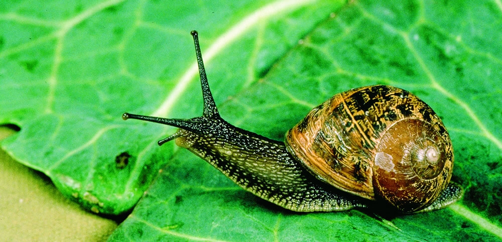

Moluscos
Características
- Triblásticos
- Celomados
- Simetria Bilateral
- Esquizocélicos
- Protostômicos
- Corpo mole não-segmentado e geralmente com concha
Organização Corporal
Possuem corpo mole, com cabeça, pé e massa visceral, protegido ou não por uma concha calcária.
- Cabeça: Situada na região anterior do corpo, contém a abertura bucal e os órgãos sensoriais, que, em certos organismos, são muito complexos, como é o caso dos olhos de polvos e lulas. Em alguns animais, simplesmente não existe, como em ostras e mexilhões.
- Pé: Corresponde ao órgão motor; é musculoso e fica situado ventralmente. Pode apresentar modificações, nas diversas formas, para cavar, rastejar, nadar ou capturar alimento.
- Massa Visceral: Conjunto de órgãos digestivos, excretores e reprodutores, situando-se internamente junto à face dorsal do corpo. Está circundada parcial ou totalmente por uma formação carnosa denominada manto. Entre o manto e a massa visceral existe a cavidade do manto ou paleal, preenchida por água nos animais aquáticos e, por ar, nos terrestres. Na cavidade do manto estão os órgãos respiratórios.
- Concha:Em grande parte dos moluscos, o manto secreta uma concha calcária, responsável pela proteção do corpo. As células do manto secretam as substâncias que formam a concha, isso faz com que a concha cresça simultaneamente em diâmetro e espessura.
- Sistema digestório: sistema completo, formado pela boca, faringe, esôfago e estômago. A faringe possui a rádula que serve para ralar os alimentos e levá-los para o tubo disgestivo.
- Sistema Circulatório:Com exceção dos cefalópodes, os moluscos possuem sistema circulatório abertoo, constituído por um coração musculoso situado numa cavidade pericárdica que impulsiona o sangue por um sistema de artérias que se abrem em lacunas chamadas hemoceles onde o sangue entra em contato direto com os tecidos. Daí, através de veias, o sangue volta ao coração.
- Sistema Respiratório: Na grande maioria dos moluscos o sistema respiratório é branquial, com as brânquias situadas na cavidade palial, que retiram oxigênio da água. Em alguns caracóis de jardim e de água doce, a cavidade úmida do manto ricamente vascularizada, funciona como pulmão, retirando O2 do ar.
- Sistema Nervoso:O sistema nervoso é formado por cinco paredes de gânglios nervosos, unidos entre si por cordões nervosos. Destes gânglios partem nervos para as diferentes regiões do corpo.
- Sistema Excretor:O sistema excretor é constituído por um ou dois pares de nefrídios, também chamados órgãos de Bojanus. Cada nefrídio é formado por um funil alongado, cuja extremidade é Anatomia interna de um caracol 4 Moluscos e Anelídeos aberta e ciliada nos bordos, o nefróstoma. Está situado na cavidade pericárdica e retiram os excretas nitrogenados tanto do sangue que circula a sua volta, como da própria cavidade pericárdica, conduzindo esses excretas para a cavidade palial, onde são eliminados através do nefridióporo.
- Classe Gastropoda: Seres aquáticos, com concha formadas por duas partes (valvas), que não apresentam cabeça mas possuem boca. EX.: caramujos, caracóis e lesmas. 
- Classe Pelecypoda ou Bivalvia:Animais marinhos, formados por duas conchas onde seu corpo fica entre elas. EX.: mariscos, ostras e vieiras.
- Classe Cephalopoda: Nesse grupo de moluscos, encontramos espécies que possuem conchas com câmaras, como os náutilos, espécies desprovidas de concha, como os polvos, e aqueles que apresentam concha reduzida e interna, como a lula.

Características Gerais e Fisiologia
O corpo é revestido por um epitélio monoestratificado ciliado, contendo células secretoras de muco e recebe o nome de manto. É ele que secreta a concha calcária constituída de três camadas: perióstraco: mais externa; camada prismática: intermediária e mais espessa; camada nacarada: mais interna, formada por várias camadas de carbonato de cálcio irisadas.
Classificação